_.jpg)
Taiwan Broom — Tokyo Exhibition
Taiwan Broom — Tokyo Exhibition
這個臺灣掃帚的蒐集計畫，源自於我們長期在臺灣各地作田野，突然發現許多鄉鎮不使用都市中便宜耐用的塑膠掃帚，而是會就地取材用當地盛產植物，做出「不那麼耐用」的「自然掃帚」：有的曾經是當地產業；更多是自用或送人的簡單日用品。
無論是否有商業價值，這些掃帚都能說出很多當地故事，我們這些外地人，可以騎著這些掃帚飛進當地的脈絡，一窺當地的植物、人文、歷史各種面向。因為這樣，所以我們展開了全臺掃帚蒐集，並藉著這些掃帚展開當地故事，成為進入各個鄉村的藉口。
這個在2017年提出的構想，沉澱多年之後被日本知名的採購人山田遊先生提出邀請去他在東京所經營的畫廊展出。很感謝因為這個邀約，我們重訪了所有掃帚師傅。許多師傅其實都已經不再製作，但因為這次非常特別的邀請而重新拿出工具、重新步入山林採集植物、再次為展覽製作掃帚。讓這些原本只存在於臺灣鄉間、生命短暫、簡單但美麗的日用品重新被人看見。


01 — 槺榔掃帚


02 — 稻草掃帚


03 — 高粱掃帚


04 — 地膚草掃帚


05 — 貴黍掃帚


06 — 山棕掃帚


07 — 山棕嫩葉掃帚


08 — 蘆竹掃帚


09 — 芒草掃帚
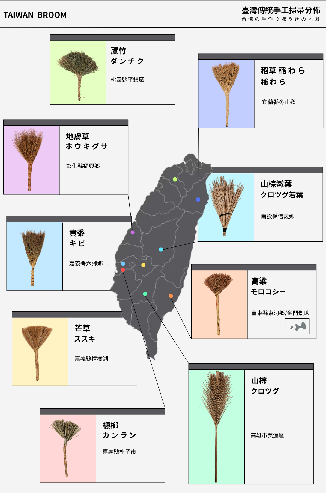
地理分佈 — Distribution
清掃是家家戶戶的日常工事，臺灣各地都曾有以天然植物製成的傳統清潔用品，因地緣、歷史與植物分布，使得全臺各地製作出各式各樣不同植物的掃帚，這些天然清潔用具雖然只是生活的「枝微末節」，但它們的「技藝」與「記憶」都值得被認真看待。


No. 01
槺榔是臺灣特有種，據稱可以追溯自冰河時期，臺灣各地都有同音或類似發音的地名，都是因為是槺榔這種植物生長地。這種植物做出來的掃帚，都被視為有法力，可以清除不好的東西。臺灣各地廟內的清潔、神明出巡、神明護體都會用槺榔掃帚。


No. 02
臺灣農村文化象徵，全臺各地只要有生產稻米，都會在農閒時用無用的稻桿製作成掃帚。
稻草掃帚主要用在曬稻穀的「埕」，用去除了稻穀的稻桿製成。掃帚主要用在戶外，不是為了將晒穀場清除乾淨、一塵不染，而是為了將石頭、雜草、稻殼與有價值的稻穀，區分開。說是為了清潔不如說是用於分類。

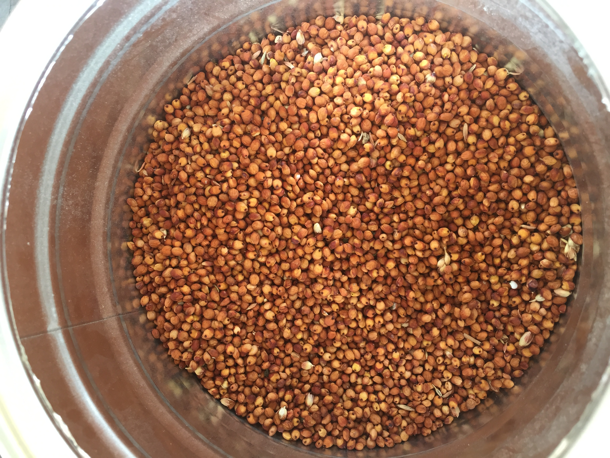
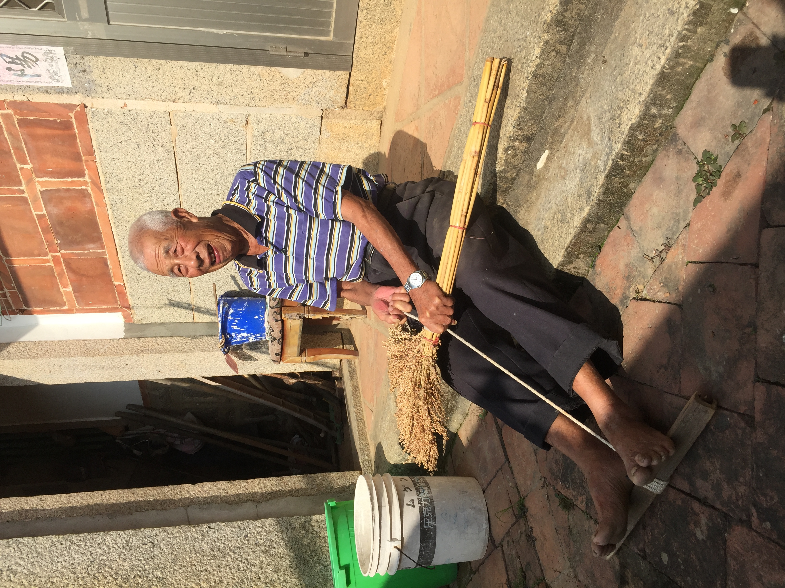
No. 03
高粱掃帚是台灣金門與東部的特產，只要有高粱產地總會見到，顯示「就地去材」製作生活用品的核心生活法則。有趣的是，東部的臺灣原住民愛用的是色彩鮮艷的紙箱束帶組成掃帚，金門當地來自中國大陸（外省人）的移民喜歡採用另一種更常見、便宜的塑膠繩。展現兩個族群不同的美學觀。另一個差別是，來自外島金門的掃帚目前都是滿滿結實不會將高粱子清除，已經是純粹用來觀賞，非實用價值。


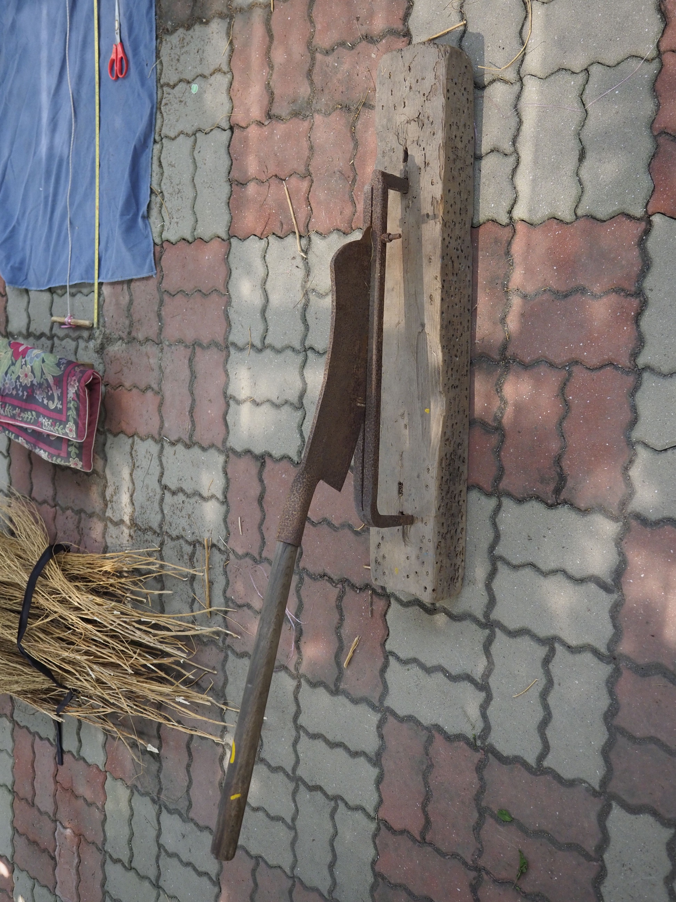
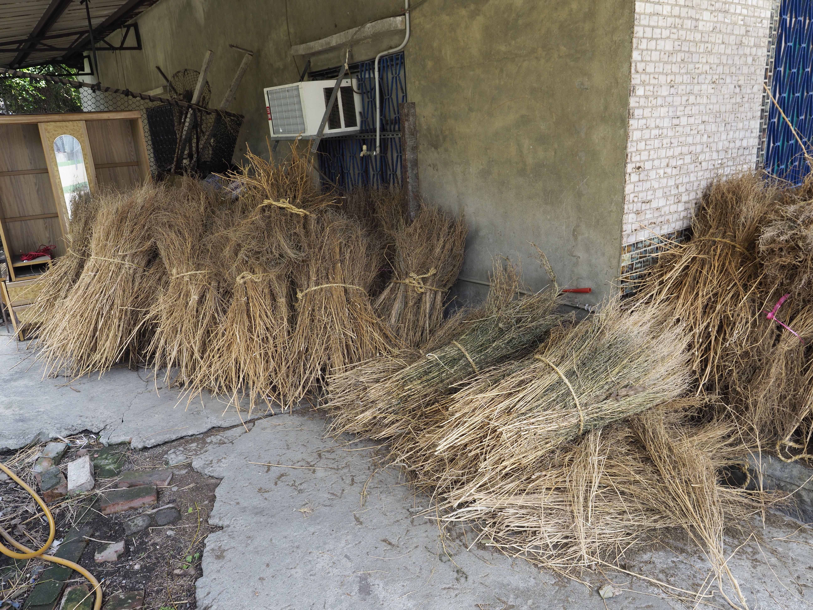
No. 04
一度為臺灣彰化西勢一地的從日本時代就存在的主要產業，跟其他大部分只限於當地使用的掃帚不同。從書籍出版到來日本展覽不到五年時間，這個村落世代相傳的產業幾乎已經消失，完全被來自更便宜人工或工業塑膠掃帚代。


No. 05
也是來自日本的掃帚，不只技術甚至連植物都是，據稱是一位來自茨城的商人帶著技術與種子要將整個掃帚生產基地帶來臺灣，因此訓練了一批專業師傅。這種掃帚跟其他我們調查的掃帚全然不同：1. 技術偏向細緻地編織而非捆榜而已；2. 主要用在榻榻米這種臺灣一般生活不常用的空間設置。是一個全然的代工代表。

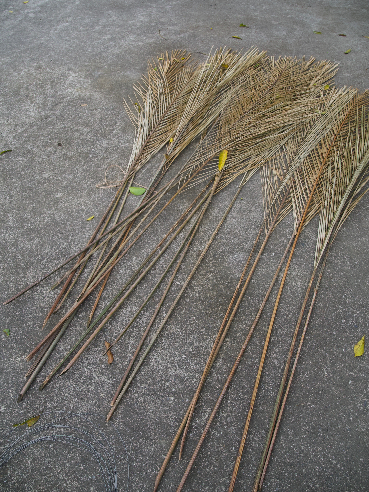
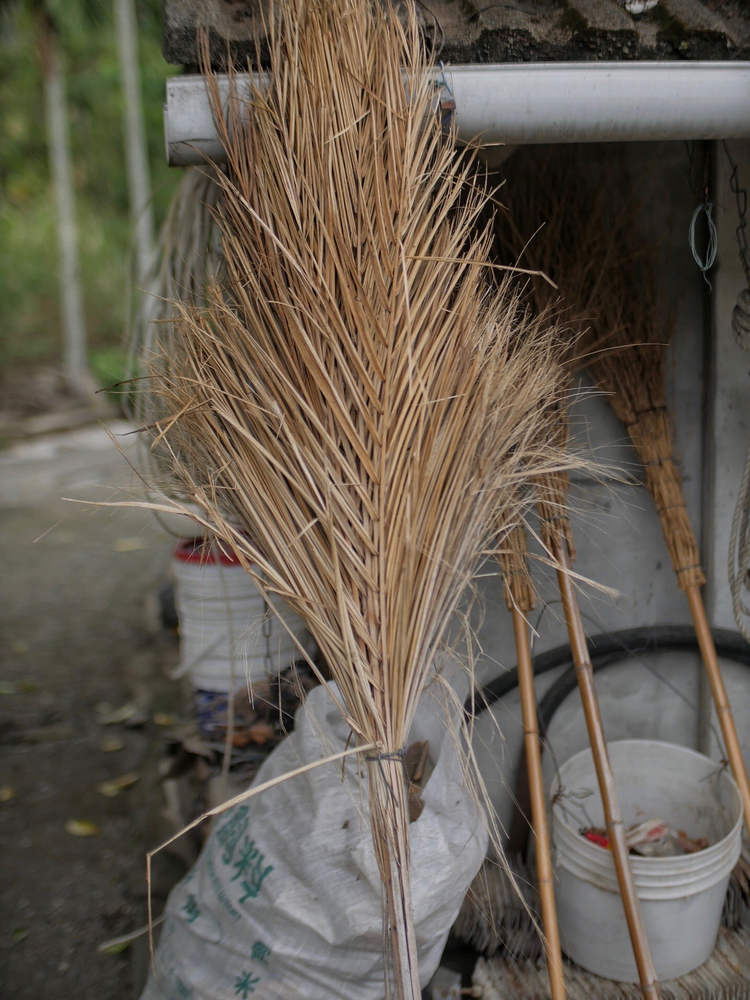
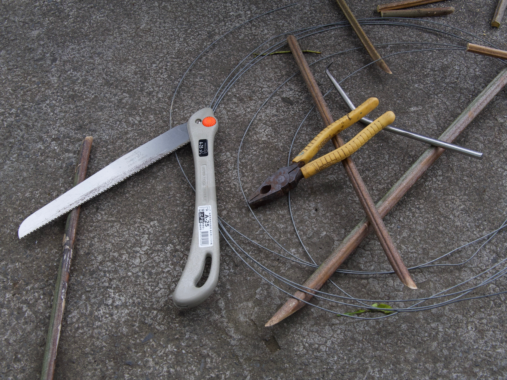
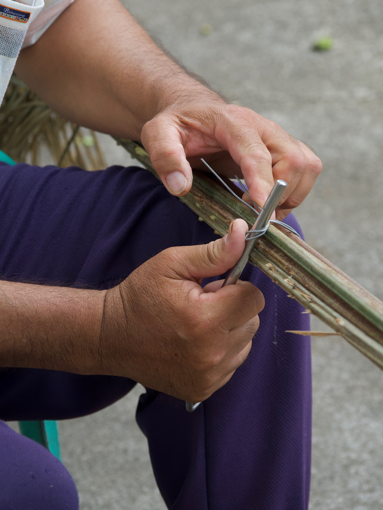
No. 06
山棕廣泛分布於臺灣全島平地至低海拔山區，跟臺灣原住民以及鄉村文化都密切相關。幾乎各民族都會充分利用山棕莖部上所包覆著的黑褐色纖維（也就是「棕毛」），是臺灣文化中雨具的主要材料，有些地方會用來製作掃帚。更多地方是直接用其巨大的葉柄製成掃帚，非常用來清潔大而廣的公共空間。在原住民文化復興活動中，全株利用山棕經常是基本課程，在臺灣的歷史博物館也經常出現。

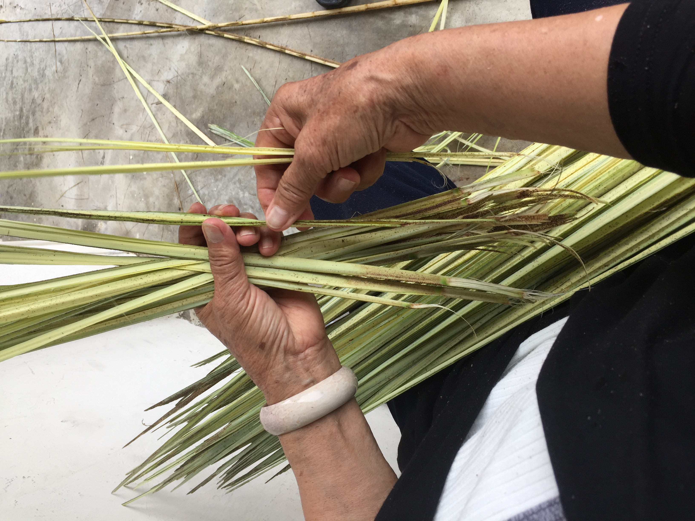


No. 07
山棕嫩葉掃帚屬於山棕掃帚的一個子類，只是師傅不取全植物、成熟植物製作，而是只取其中剛拔出的嫩葉製作，是我們在田野調查中無意發現的獨特精緻路線。雖然用同樣植物，嫩葉較難取得；但成果使用更順手，也需要較細緻的手工。目前只有發現一位具備各種原住民文化技藝、語言的老師傅在製作。

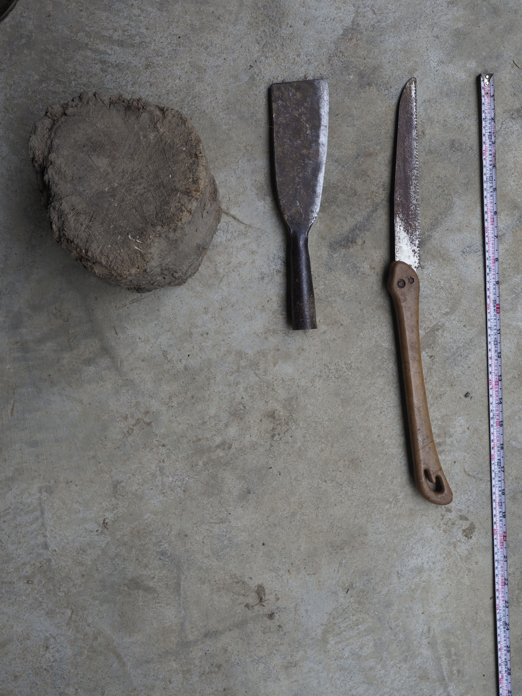
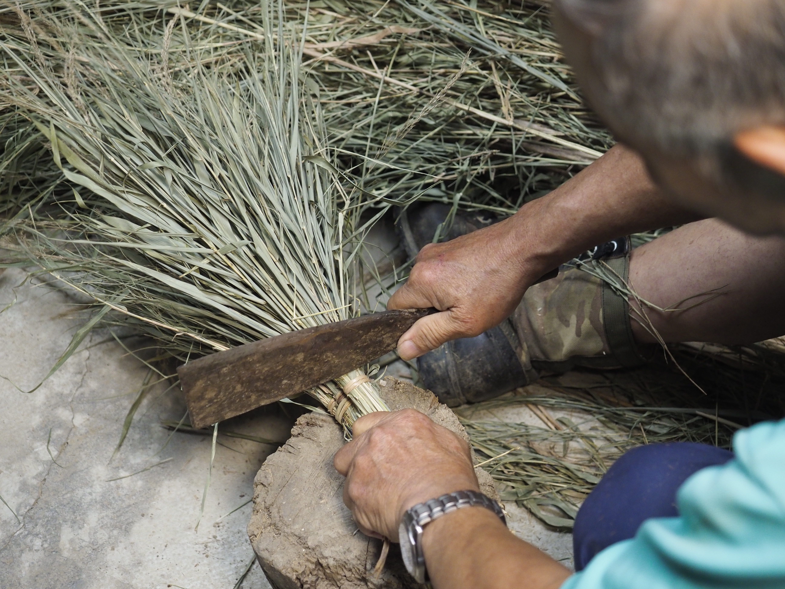
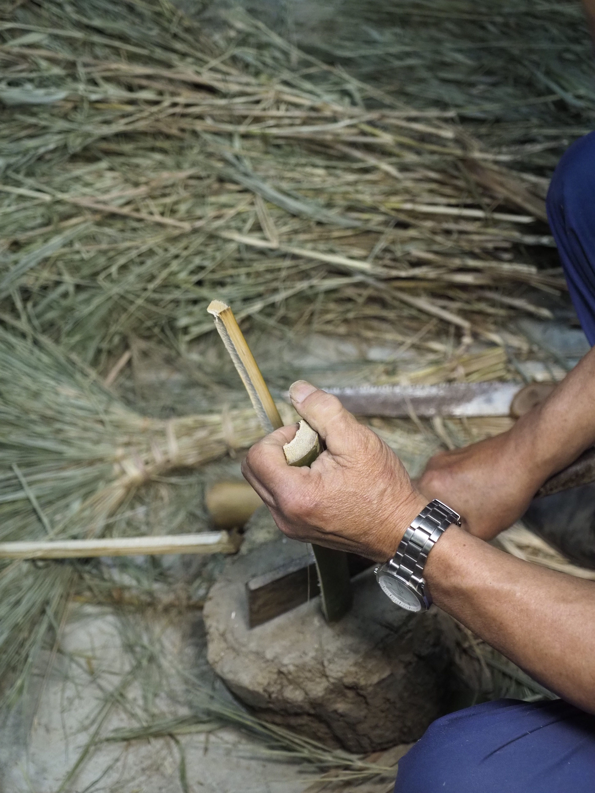
No. 08
蘆竹也是台灣常見植物，全台各地都有。蘆竹掃帚則是現在以前東勢庄（現在的桃園平鎮）的主要產業，甚至因此曾被稱為掃把庄。雖然這個產業已經沒落，但當地仍有師傅空閒時會製作、以地方特產在當地的商店販賣。這次因為東京展再次去跟師傅下訂單才發現，現在雖然訂單已經大量減少，但師傅為了確保掃帚送到日本時色澤、型態都要維持「好看」，因此提出了許多建議。這才讓我們知道師傅並不是將這些掃帚當作用過即丟的工具，而是一個本身具有美感的物件。


No. 09
到了冬天，臺灣山邊海邊，甚至河川邊都會出現芒草以及衍生出來的芒花觀賞活動，芒草掃帚也是這些芒草產地的重要產物。我們在臺灣發現有許多地方，都發現仍有師傅使用芒草作掃帚。從漢人、客家人到原住民，這地方的住民都受自然啟發，忍不住動手讓芒草變成家中用品。